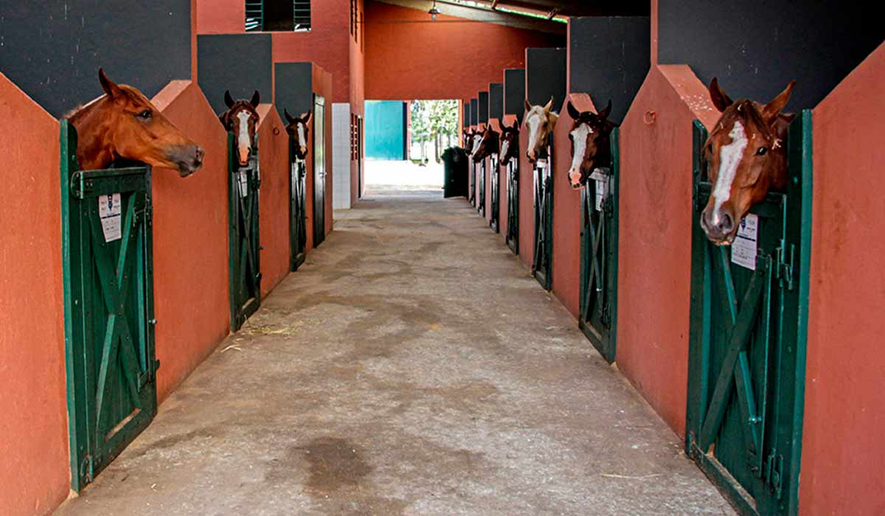

O Haras Imperial foi fundado em 2026 por quatro amigas apaixonadas pelo universo equestre: Angelina Cardoso, Beatriz Santos, Mirella Santos e Tayná Pereira.
Unidas pelo sonho de criar um espaço dedicado ao cuidado, à criação e ao desenvolvimento de cavalos, elas transformaram sua paixão em um projeto baseado em respeito,
dedicação e excelência. No Haras Imperial, cada cavalo recebe um tratamento digno da realeza, com alimentação de qualidade, acompanhamento especializado e muito carinho.
Nossa missão é oferecer um ambiente seguro e acolhedor, onde tradição, confiança e amor pelos animais caminham juntos.

No Haras Imperial, oferecemos serviços voltados ao bem-estar e ao desenvolvimento dos cavalos, sempre com qualidade e dedicação.
Criação de cavalos: criação responsável, com foco na saúde e no bom desenvolvimento dos animais.
Treinamento: preparação de cavalos para lazer, esportes e competições.
Pensão para cavalos: hospedagem com alimentação, manejo diário e cuidados especializados.
Acompanhamento veterinário: monitoramento da saúde, vacinação e cuidados preventivos.
Reprodução: planejamento reprodutivo para garantir animais de alta qualidade.
Venda de cavalos: comercialização de cavalos saudáveis, bem treinados e de excelente procedência.
Passeios e visitas: visitas ao haras e experiências para conhecer os cavalos e a rotina do local.
Aperte W para pular